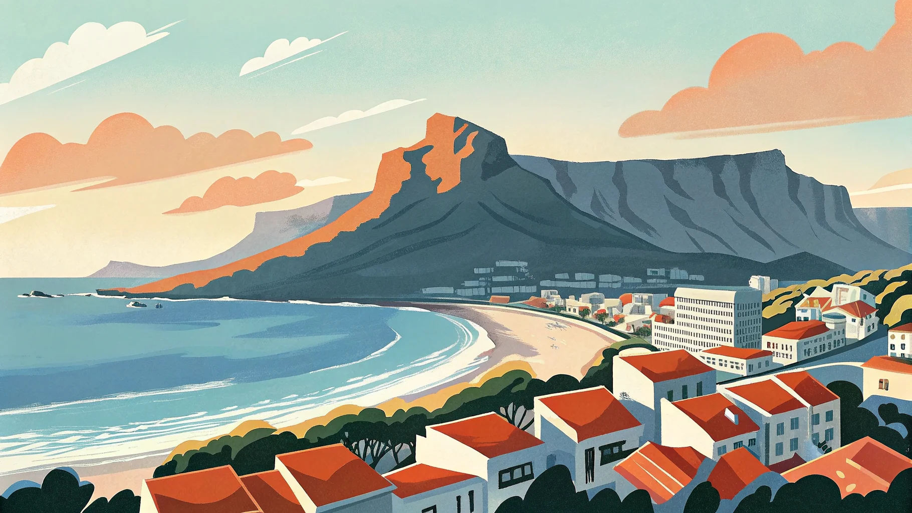
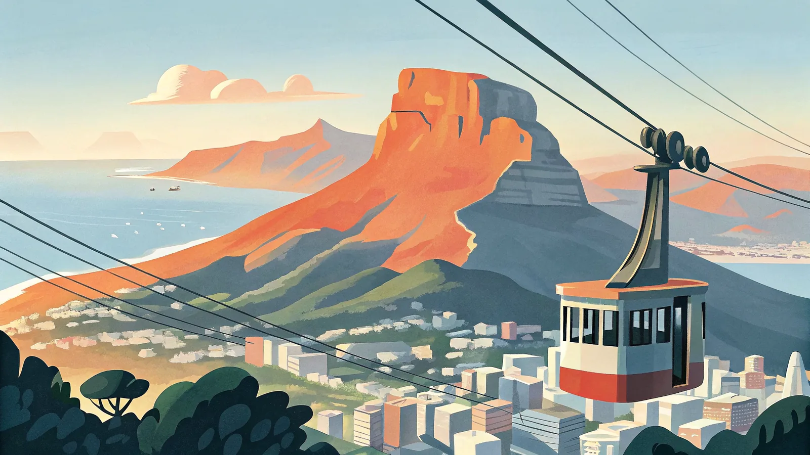
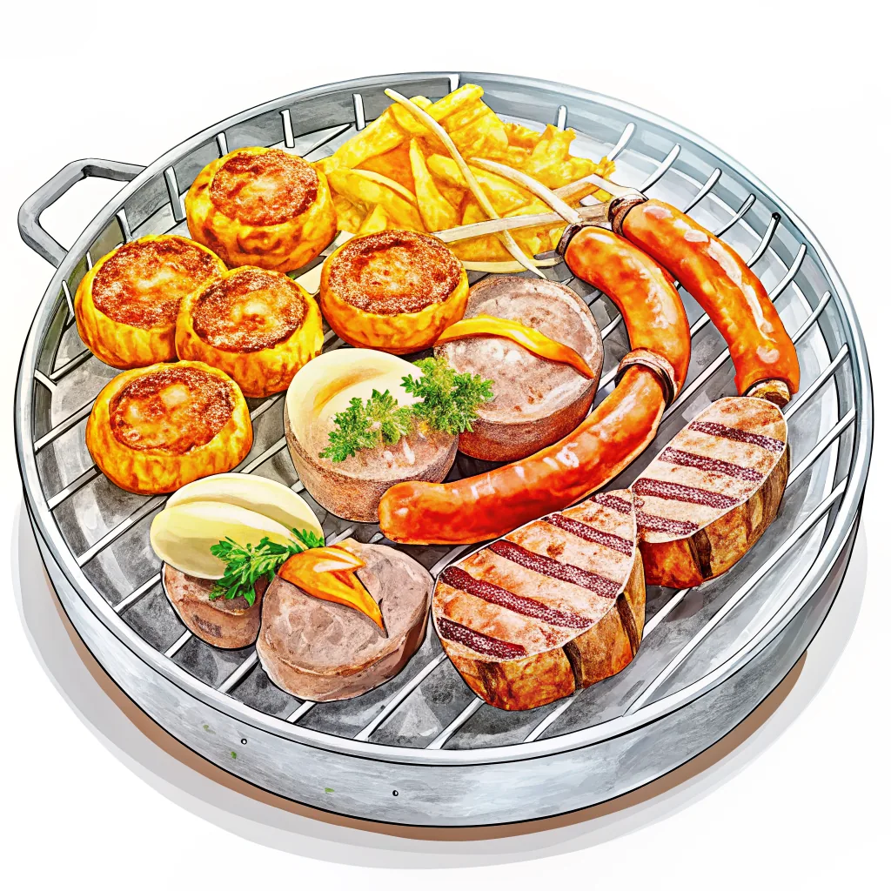
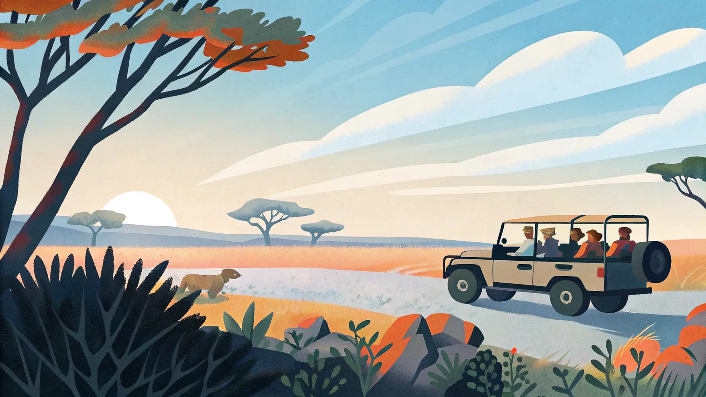

I would like to order this, please.
Can I have this? ／ Could you bring me this?
この画面を店員さんに見せてください




年間約17,000人（2024年）の日本人が訪れる旅行先。まだ認知度は高くないが、ケープタウンの絶景・ビッグファイブサファリ・多彩なグルメの魅力に気づく旅好きの間で注目が高まっており、訪問者数は前年比3割増と急上昇中。シンガポール・ドーハ・ドバイ・香港経由の乗り継ぎが一般的。
南アフリカは南半球に位置するため季節は日本と逆転。ただし地域によって気候が大きく異なります。ケープタウンは地中海性気候（夏は乾燥・冬は雨）、ヨハネスブルク・クルーガーは高原性気候（夏は雨季・冬は乾燥）です。
色が濃いオレンジほど気温が高く、サファリは乾季（5〜9月）が動物を見やすいベストシーズンです。
ベスト：11月〜3月（南半球の夏・乾季）／ 6〜8月は雨季で強風。ただし観光自体は年中可能。
ベスト（サファリ）：5月〜9月（乾季）／動物が水辺に集まり視界も開けて見やすい。10〜4月は雨季で草が茂り動物が見づらい。
ベスト：11月〜4月（気候が安定し観光しやすい）／年間を通じて雨の可能性があるため防水ジャケットが安心。6〜11月は沿岸でクジラ観察もできる。
日本のGW・お盆・年末年始に加え、世界的な年末年始（12月中旬〜1月上旬）は経由地空港の混雑もあり特に高騰。狙い目は3〜4月（現地の秋）と9〜10月（サファリ本番前）で、カタール・エミレーツ・シンガポール航空の運賃も落ち着きやすい。直行便がなく需要が読みにくい路線なので、3〜6ヶ月前の早期予約が価格を左右する。
南アフリカの国旗。6色の「レインボーフラッグ」は民主化と多民族の共生を象徴する。
人気の観光地から穴場まで、実際に行って良かった場所を厳選してまとめました。